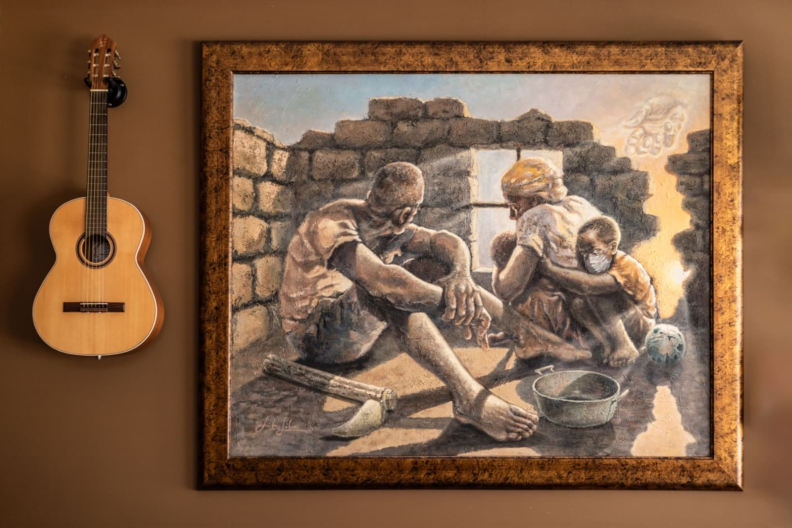
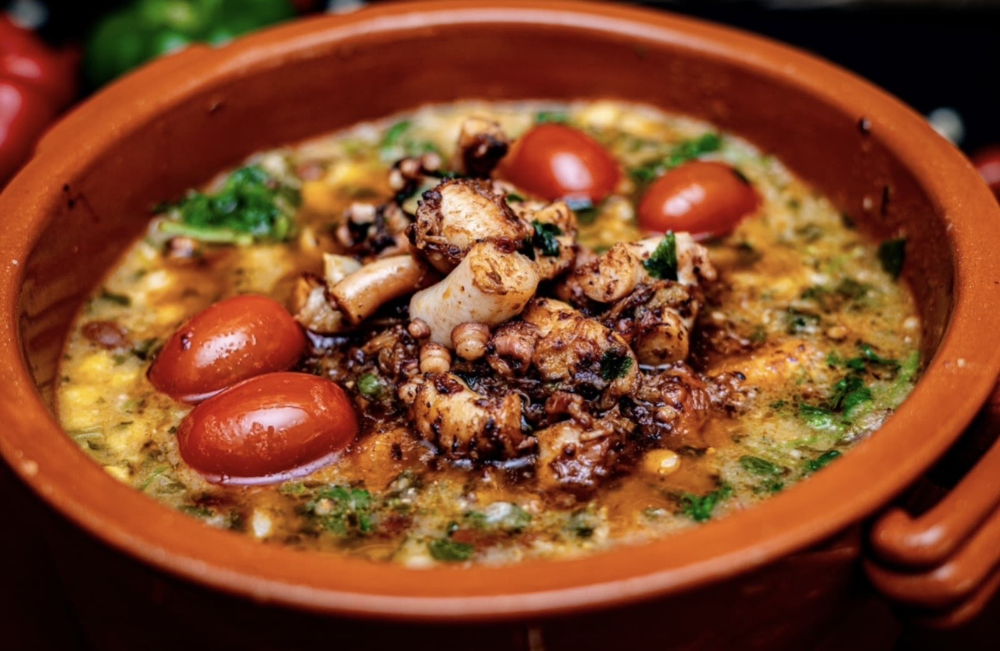
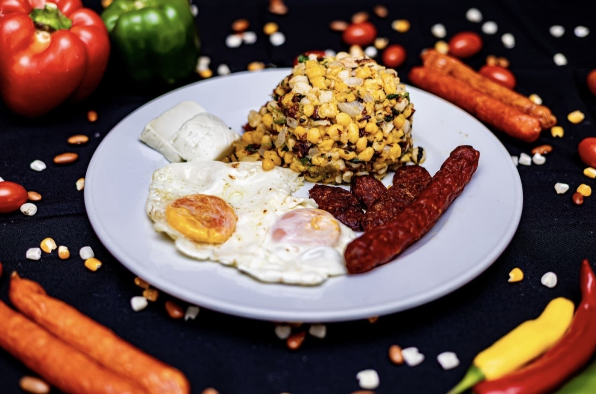
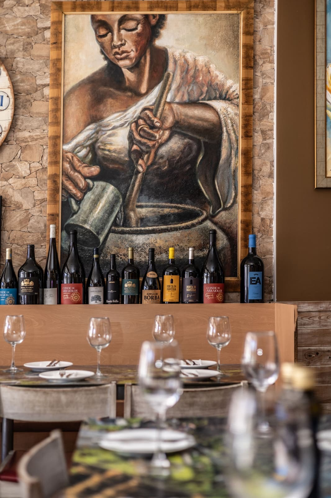
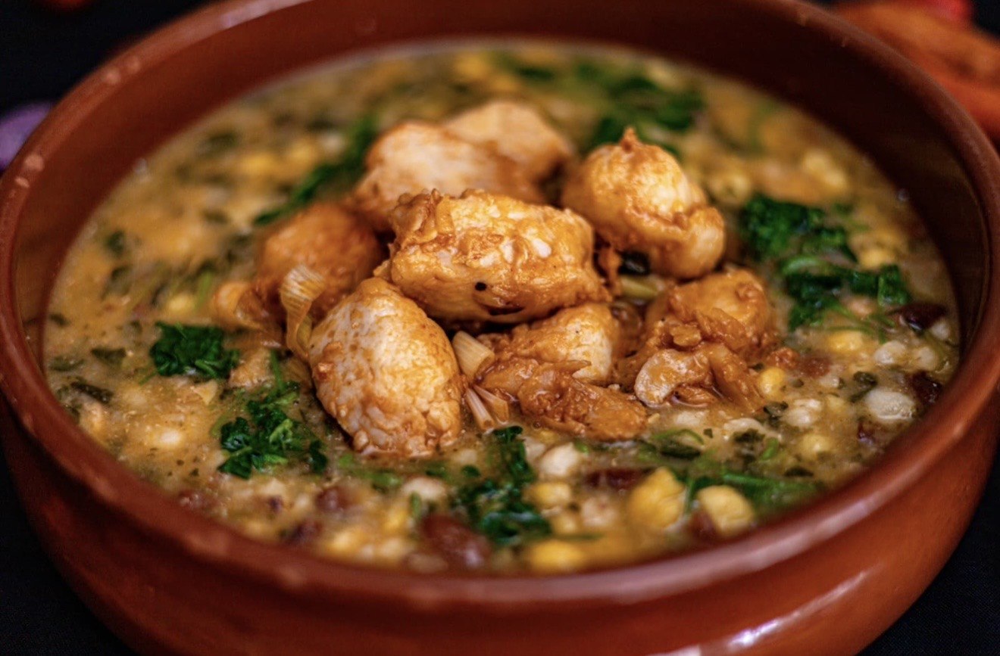

Especial
Cachupa Rica Todos os Dias
Preparada lentamente em lume brando durante horas com carnes nobres e feijão da terra, servida fumegante em barro todos os dias.
Barreiro · Cozinha de Cabo Verde
A cachupa dá o nome à nossa casa. O cozimento lento, os ingredientes das ilhas e o carinho da tradição dão-lhe a alma.

Todos os dias
11:00—23:00

O prato que dá nome à casa
O prato mais emblemático de Cabo Verde é preparado aqui como manda a tradição: milho quebrado selecionado, feijão pedra, carnes nobres e tempero aromático cozinhados em lume brando durante horas.
Servida bem quente em autênticas caçarolas de barro, cada garfada é uma viagem aos sabores e à hospitalidade das ilhas.
Conhecer a nossa históriaSabores da casa
Da autêntica Cachupa de Polvo e Marisco à clássica Cachupa Refogada com ovos estrelados, chouriço e queijo de cabra. Sabores genuínos que reconfortam a alma.
Reservar mesa para provar
Cachupa de Polvo e Marisco em lume brando com tomate cereja.

Cachupa Refogada clássica com ovos estrelados, chouriço corado e queijo da terra.
À mesa, agora
Especial
Preparada lentamente em lume brando durante horas com carnes nobres e feijão da terra, servida fumegante em barro todos os dias.
Cultura
As paredes da nossa casa acolhem pinturas a óleo originais dedicadas à cozinha, à música e às gentes de Cabo Verde. Uma exposição viva enquanto almoça ou janta.
Aviso
Para mesas de 4 ou mais pessoas ou celebrações familiares, recomendamos o contacto telefónico prévio para prepararmos o melhor acolhimento para si.
Uma casa no Barreiro
Um espaço acolhedor com paredes de pedra rústica, mesas de madeira, luz calorosa e o aroma inconfundível da cachupa acabada de apurar.
Aqui encontra o conforto e a hospitalidade de uma verdadeira casa cabo-verdiana no Barreiro, onde a boa comida se junta à arte e à simpatia.
Sente-se.Ver mais sobre a casa
Há lugar à mesa.

Galeria Cachupa Rst
Uma galeria viva nas paredes do restaurante com pinturas a óleo que retratam a história, a música e a alma do povo cabo-verdiano.
Conhecer a galeriaA chegar brevemente
Estamos a fotografar de novo as telas originais de Lito Silva expostas no restaurante.

Rua Almirante Reis · Barreiro
Esperamos por si de portas abertas na Rua Almirante Reis, no Barreiro. Com esplanada acolhedora, opções veganas e noites de música ao vivo.
Cachupa rica de frango tenro dourado em lume lento com cebola caramelizada.